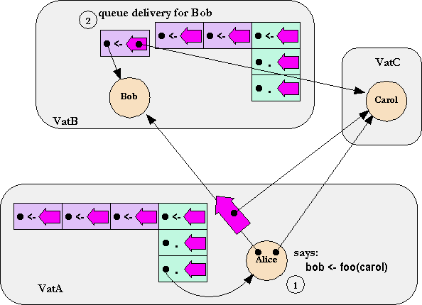

| |
Distributed
Queuing |
||||||
Returning to the human world for a moment, as I schedule my time, I find I mainly use two patterns: If in performing task X I find I'm blocked on the outcome of a subtask Y, I put the X aside for awhile, work on Y until it's done, and then continue with X. This corresponds to synchronous do it immediately, or call-return scheduling as explained above. The other pattern is that, in performing task X, I come to realize another task Y I need to perform, but I don't need to do Y now. To ensure I don't forget Y, I jot a note on a to-do list, and then continue with my present task.
This latter pattern corresponds to asynchronous do it eventually scheduling, as supported by the eventual send. A send is written like a synchronous call, but with a "<-", the eventually operator, rather than a ".", between the recipient and the message. A record that this message must be delivered to this recipient is duly noted, but then the original turn continues about its business unaffected.

This shows each vat as having an L-shaped data structure recording what remaining computations still need doing in that vat. The green blocks are stack frames, and the vertical tower of green blocks is the stack. As is traditional, the stack is shown upside down, with the top-of-stack at the bottom. The purple blocks are pending deliveries -- a record of the need to deliver a given message to a given receiver. The horizontal row of purple blocks is the pending delivery queue, ie, the event queue.
Computation in each vat proceeds only at its current top-of-stack.
An immediate call (".") pushes a new green block to the top of stack. Since "." can only be performed on a NEAR (intra-vat) reference, the green block gets added to the stack of the calling vat.
An eventual send ("<-") enqueues a new purple block to the back of the event queue of the vat hosting the receiver.
We see that Alice is currently executing in VatA, since VatA's top-of-stack points at her as receiver. In step (1), Alice executes "bob <- foo(carol)". In step (2) we see the result -- a record of the need to deliver "foo(carol)" to Bob is enqueued on VatB's queue, since Bob resides in VatB.
Unshown is step (3), when computation in VatB advances till this record is at the front of the queue, whereupon it becomes the initial stack frame of a new stack, at which point Bob actually receives the message.
The above explanation ignores the means by which values are returned. For more on this, see Message Passing.
While the vertical stack really is as fully-ordered as the LIFO order shown above, the FIFO full-order of the horizontal part of the L -- the queue -- is a simplified overspecification. Rather, E specifies only partial order on references. A FIFO queue as shown above does satisfy this specification, and the current E implementation uses this technique. But correct E programs should not rely on any stronger ordering than that specified.
Unless stated otherwise, all text on this page which is either unattributed or by Mark S. Miller is hereby placed in the public domain.
| |
|
report bug (including invalid html)
|
||||||||